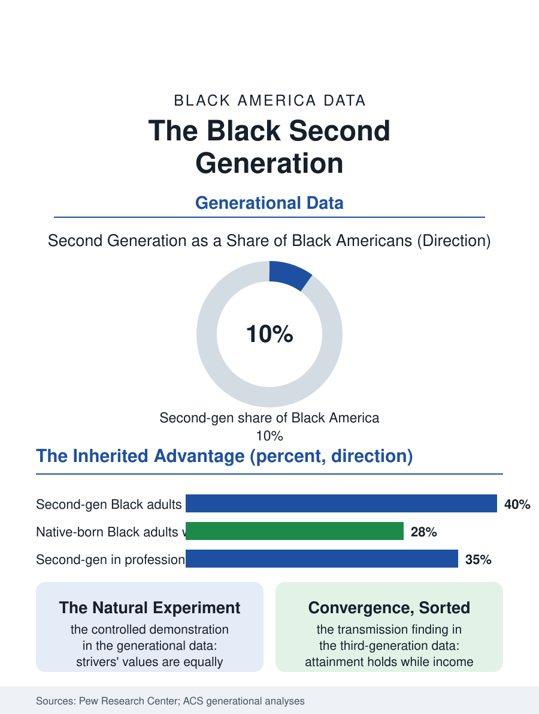

Black Census
The Vanguard: Black America's Second Generation
The children of Black immigrants out-earn and out-graduate the native-born average, a natural experiment in starting positions inside one racial category. The second generation file.

One in ten Black Americans is the child of immigrants, and that second generation is quietly becoming the population's vanguard in the data: its members out-earn and out-graduate both their parents' generation and, on several headline measures, the native-born Black population as a whole. The surveys rarely isolate them, filed under the single racial category, but where researchers do, the second generation's profile is one of this atlas's most consequential. This article reads the second generation file.
The Immigrant Advantage, Inherited
The Pew and census analyses that separate the generations find the pattern demographers call immigrant optimism with a balance sheet. Second-generation Black adults post median household incomes above the native-born Black median, college completion rates well above it, and poverty rates below it, a profile that reflects their parents' selected migration, since the immigrant files show a stream drawn disproportionately from the educated and the striving of their home countries, and raised in households whose two-parent rates and educational expectations the family data record as the stream's signature. The advantage is real but not magical, and the file is careful about its sources: it does not show that native-born Black families lack the values the second generation's households display, since the aspiration surveys find those values at equal strength; it shows what the values can purchase when they are not fighting the specific accumulated headwinds, the wealth file's zero start, the neighborhood effects, the multigenerational exposure to the systems this atlas audits, that the native-born line carries. The second generation, arriving with strivers' equity rather than monetary equity, tests the proposition that the native-born outcomes are a product of structure rather than culture as cleanly as any natural experiment demography offers.
Between Two Files
The second generation's experience files under neither parent category comfortably. In school they are counted as Black students, their outcomes lifting the aggregate statistics their immigrant parents' advocates cite and their native-born peers' advocates puzzle over, while their home lives run on the immigrant file's software, the remittance obligations they inherit, the languages of the grandparents, the homeland politics at the kitchen table. Their identity answers in the ancestry file show the specification in action, Jamaican-American, Nigerian-American, Haitian-American claimed with a precision that differentiates them from the native-born modal answer, and the qualitative literature records the friction the specification meets, the intra-Black negotiation over authenticity, accent, and belonging that every multi-origin people conducts and that this generation conducts in both directions at once, too American for the cousins in Kingston, too foreign-named for the simplest American reading. Their occupational data show the parents' strategies compounding: health care and professional concentrations exceeding even the immigrant generation's, entrepreneurship rates that blend the immigrant firm's energy with the native-born's market knowledge, and a geographic restlessness, raised in the gateway metros, dispersing to the same opportunity map as every other credentialed cohort in the migration files.
The Convergence Question
Demography's standing question about every second generation is convergence: does the third generation keep the advantage or regress toward the native mean, and the Black data are only now old enough, in the Caribbean stream's depth, to begin answering. The early evidence is mixed in an instructive pattern: educational attainment holds its elevation into the third generation more stubbornly than income does, and the outcomes of the third generation sort by the neighborhoods and schools the second generation's income could buy, which is to say the advantage transmits through exactly the channels, housing, schooling, networks, that transmit disadvantage in the native-born line, suggesting the machinery is the same and only the starting position differed. That finding may be the file's most important export to the whole atlas: it converts the second generation from an immigrant story into a controlled demonstration of what Black outcomes look like when the starting position is merely equal-ish, a striver's household, an unredlined first address, a school not pre-sorted by a century of policy. The second generation file closes with its share rising on every projection, toward a Black America in which the immigrant-descended are a fifth or more of the whole. The aggregate statistics this atlas publishes will increasingly be their statistics too, blending the lines until the categories the demographers keep must finally be revised to admit what the kitchen tables settled long ago: there was never one Black story in the data, only a family of them, converging.
More in Black Census
The Black Population of the United States: Size, Definitions, and Distribution
The Black population of the United States totals 52.8 million — 15.4 percent of the nation. How the Census Bureau defines and counts the population, and where it lives.
Black Median Household Income in the United States
Black median household income stands at $56,490 in the Census Bureau's annual income report — how the figure is measured, how it compares, and what drives it.
The Black Poverty Rate: Levels, Children, and the Long Trend
The official Black poverty rate is 17.1 percent — against 11.1 percent nationally and 7.7 percent for non-Hispanic White Americans. How poverty is measured and what the data show.
Source: Pew Research Center second generation studies; U.S. Census Bureau generational analyses of American Community Survey data.